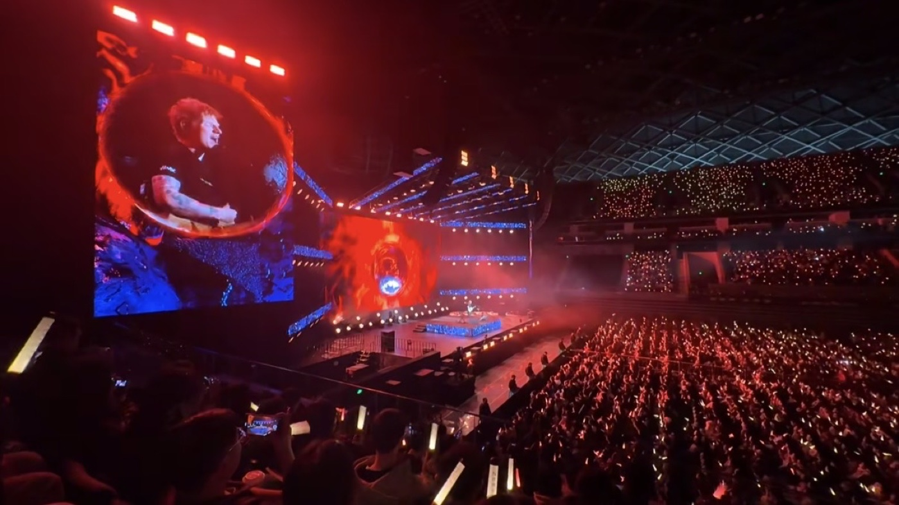
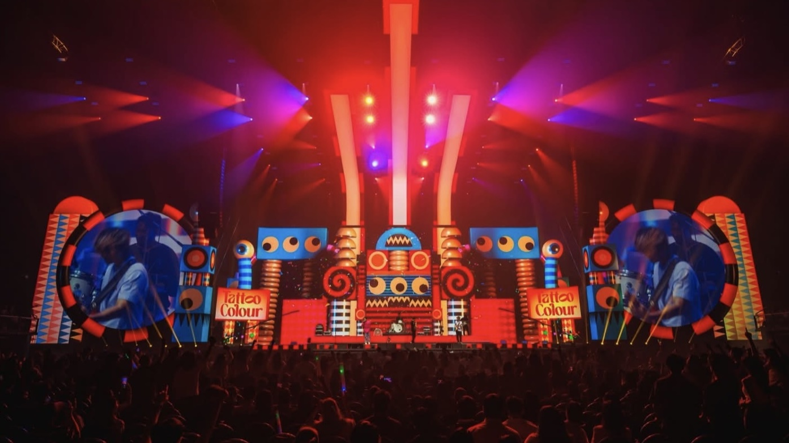
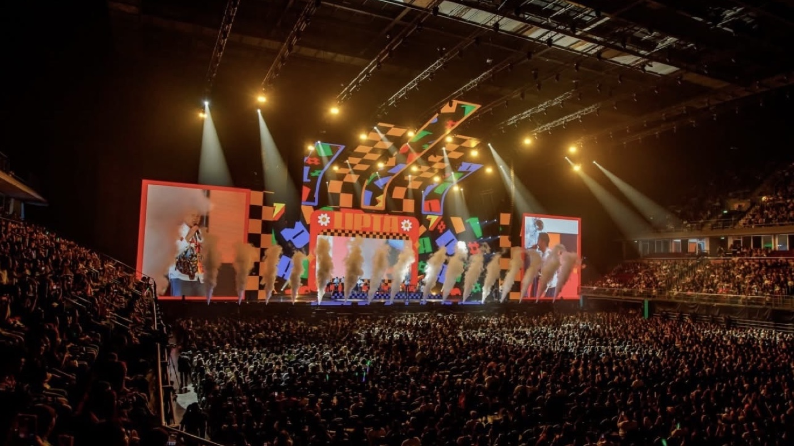
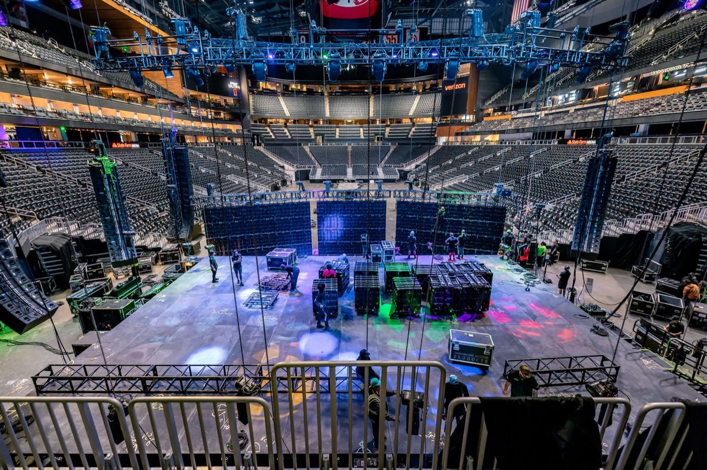
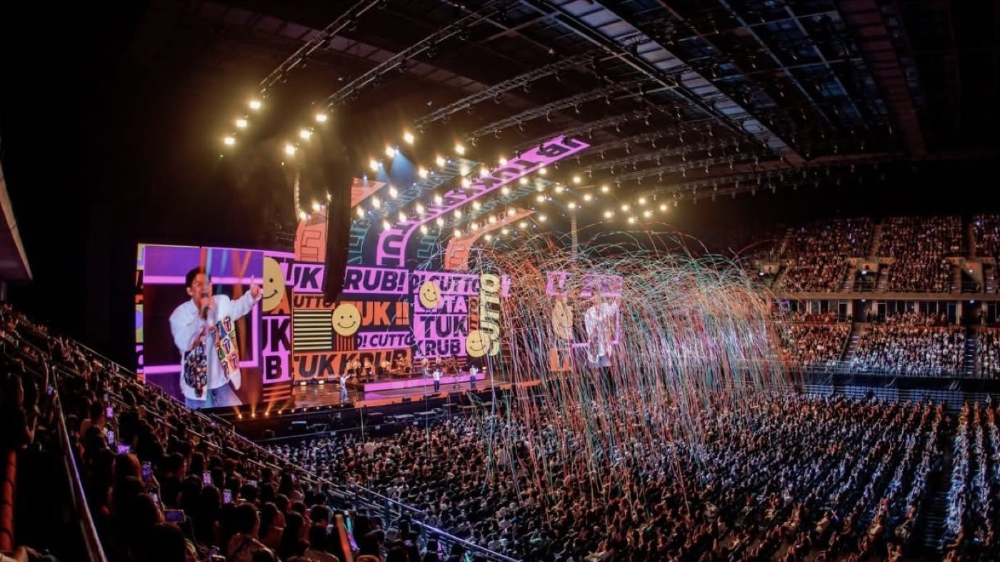

A concert LED screen lives a harder life than a permanently installed wall. It is loaded into a truck, rigged in a few hours, driven hard for a night at high brightness, struck before dawn, and then shipped to the next city. The specification has to reflect that cycle, not just the image quality at the moment of the show.
The three forces that break rental screens are mechanical shock, thermal cycling, and moisture. Shock comes from road cases and rigging. Thermal cycling comes from running bright for hours and then cooling overnight. Moisture comes from outdoor festivals, fog machines, and humid venues. Cabinets that ignore these forces fail early, usually mid-tour.
This guide covers the buying decisions that matter for concert and touring use: pitch and brightness for the audience and the cameras, cabinet weight and rigging hardware, processing and redundancy for show day, and the service model that keeps a fleet running across a season.
One framing point before the details. A concert screen is a fleet asset, not a single product. Buyers should think in terms of how many tiles they need, how those tiles pack, how spares are managed, and how fast a failed tile can be swapped between soundcheck and doors.
The economics follow from that. Rental screens earn money by working, so load-in speed, weight, and reliability matter as much as pixel pitch when a promoter is comparing bids.
Pitch is set by the closest audience distance and by the cameras. The front rows of a general-admission floor may be only six to ten metres from the stage, so a pitch of P2.6 to P3.9 is common for main performance screens. Side screens and delay screens viewed from further back can use P3.9 to P4.8 without anyone noticing the difference.
The width of the stage also plays a part. A touring set that grows or shrinks between venues is easier to serve with a modular cabinet grid that keeps a fixed tile size, so the screen can be rebuilt to a different aspect ratio without new parts. Buyers should confirm the tile count for the widest show on the tour, not just the first date, and check that the rigging plan scales with it.
Brightness has to beat the stage lighting. A concert screen behind a lit band competes with moving heads and follow spots, so outdoor shows routinely need 5,000 to 8,000 nits, and daylight festival stages push toward the top of that band. Indoor arenas can run lower, but not as low as a corporate screen, because the stage wash still hits the panels.
Refresh rate and scan mode are what keep the screen clean on camera. At 1,920 Hz or above, most broadcast and IMAG cameras stop showing scan lines across the LED wall. Asia Vision rental products meet or exceed that figure, and a higher refresh also reduces the chance of banding when a phone films the show for social media.
Greyscale depth matters for concert content because the video is dark and gradient-heavy. A panel with limited greyscale processing will show stepping in smoke, shadows, and slow fades, which is exactly the content a concert uses most. Specify 14-bit or higher processing with a calibrated low-brightness response so blacks stay smooth instead of posterised.
Finally, be careful with the brightness number itself. A panel rated at 8,000 nits runs cooler and lasts longer when the show is driven at 60 percent of that figure, so specify headroom rather than running every tile at maximum.

| Screen Position | Typical Pitch | Viewing Distance | Brightness Target |
|---|---|---|---|
| Main stage IMAG | P2.6 - P3.9 | 6 - 15 m | 5,000 - 8,000 nits |
| Side or delay screen | P3.9 - P4.8 | 15 - 40 m | 5,000 - 7,000 nits |
| Stage floor or riser | P2.6 - P3.9 | 4 - 10 m | 3,000 - 5,000 nits |
| Outdoor festival main | P4.8 - P6.5 | 20 - 60 m | 6,000 - 8,000 nits |
| Arena halo ribbon | P3.9 - P6.5 | 10 - 50 m | 4,000 - 6,000 nits |
Weight is money in touring. Every kilogram has to be trucked, lifted, and hung from a rig that carries its own rating. A 500 by 500 mm cabinet at about 6.5 kg lets a rigger build a large screen with a lighter truss and fewer motors, which speeds load-in and reduces the structural package the venue has to approve.
Cabinet mechanics decide how fast the screen goes up. Curve locks that allow both convex and concave builds in one tile give the designer freedom without a second inventory. Alignment pins that seat with one hand let a two-person crew build a wall faster than a four-person crew working with a less clever cabinet.
Service access is the other mechanic. Front and rear maintenance on the same cabinet means a failed tile can be swapped from whichever side the rig allows, which matters when a screen is flown tight against a backdrop or a set piece. In a touring context, pulling a module from the front without unrigging the wall is often the difference between a fixed show and a cancelled one.
Finally, packing. Road cases that hold a fixed tile count with foam matched to the cabinet geometry protect the fleet between shows. Budget for cases as part of the purchase rather than an afterthought, and confirm the case dimensions fit standard truck bays and venue loading doors.
Hanging hardware deserves the same attention. Rated clamps, safety bonds, and a documented load table let the venue's rigging supervisor sign off quickly instead of ordering an independent review that eats a day of the schedule.

| Requirement | Baseline | Better To Specify | Why It Matters |
|---|---|---|---|
| Cabinet size | 500 x 500 mm | 500 x 500 mm | Fits standard rigging grids |
| Weight per cabinet | Under 8 kg | About 6.5 kg | Lighter truss and fewer motors |
| Maintenance | Rear only | Front and rear | Swap tiles in tight rigs |
| Refresh rate | 1,920 Hz | 3,840 Hz | Cleaner on IMAG and phones |
| Curve capability | Flat only | Convex and concave | Design freedom, one inventory |
| Outdoor rating | IP54 | IP65 | Survives festival weather |

A concert screen is only as good as the signal chain behind it. Redundant sending cards, a backup media server, and a spare processor on the truck are not luxuries on a tour. They are the difference between a show and a blackout, and buyers should specify the playback hardware and the failover path at the same time as the panels.
Signal distribution over long stage runs needs fibre rather than copper. A stadium run from front of house to the stage can exceed the reliable length of a copper link, and fibre also removes the ground-loop problems that cause flicker and colour shifts in audio-heavy environments.
Content is often the longest lead item. Concert video is custom, and studio time should be booked well before the first show. The screen supplier should share the receiving card capabilities, the exact pixel map, and the processing limits so the content studio renders to the real panel rather than an approximation that has to be re-cut on site.
Plan the crew as carefully as the hardware. A tour needs at least one person who can diagnose a receiving card, replace a power supply, and recalibrate a tile. The supplier should offer training and a documented spare-parts list, because a fleet that depends on the vendor flying in for every fault will not survive a busy season.
Finally, rehearse the failure case. A short pre-tour drill that black-tests the wall and confirms the backup path under show conditions is cheaper than discovering the gap during a headline set.
Asia Vision Technology's X-series rental cabinets measure 500 x 500 mm and weigh about 6.5 kg, with front and rear maintenance and locking hardware that builds both convex and concave shapes. That combination keeps truss loads down and lets a crew swap tiles without unrigging the wall.
For this application our range covers the requirement directly: the COB Z rental series (7680Hz flip-chip, 500×500mm touring cabinets) and the COB ZH touring series (sealed, wind-rated to 20m/s).
We certify panels to CE, FCC, and RoHS, ship production orders in 15 to 20 working days, and back the fleet with a 3-year standard warranty. Tell us your stage layout and camera positions and we will recommend a pitch and brightness that survives both the front row and the broadcast feed.

For this requirement our range covers it directly: the S Series (universal rental cabinets for indoor and outdoor use).